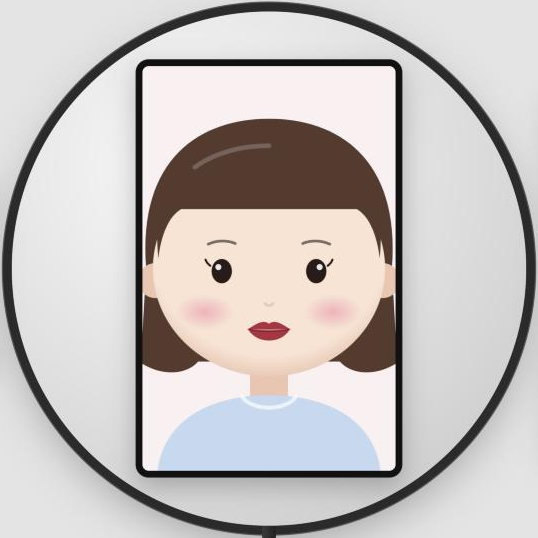
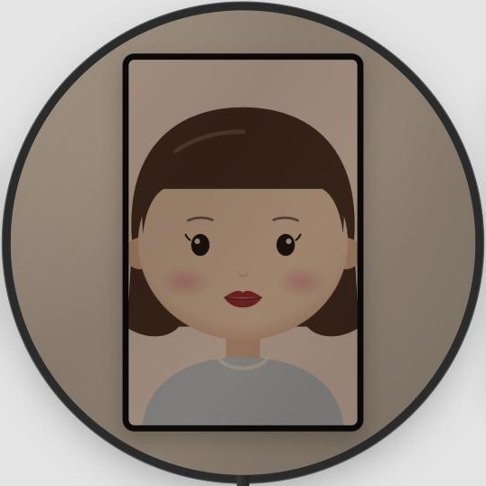
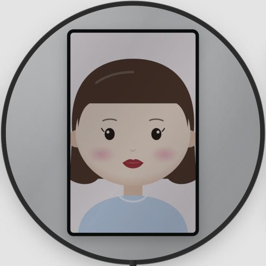
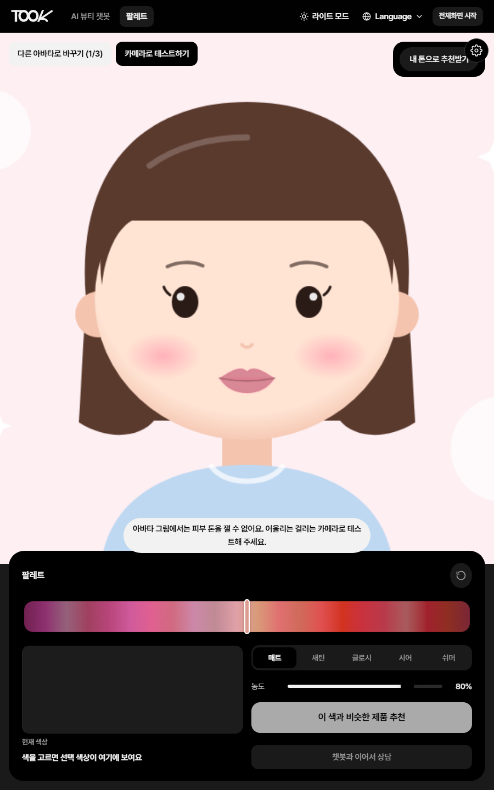
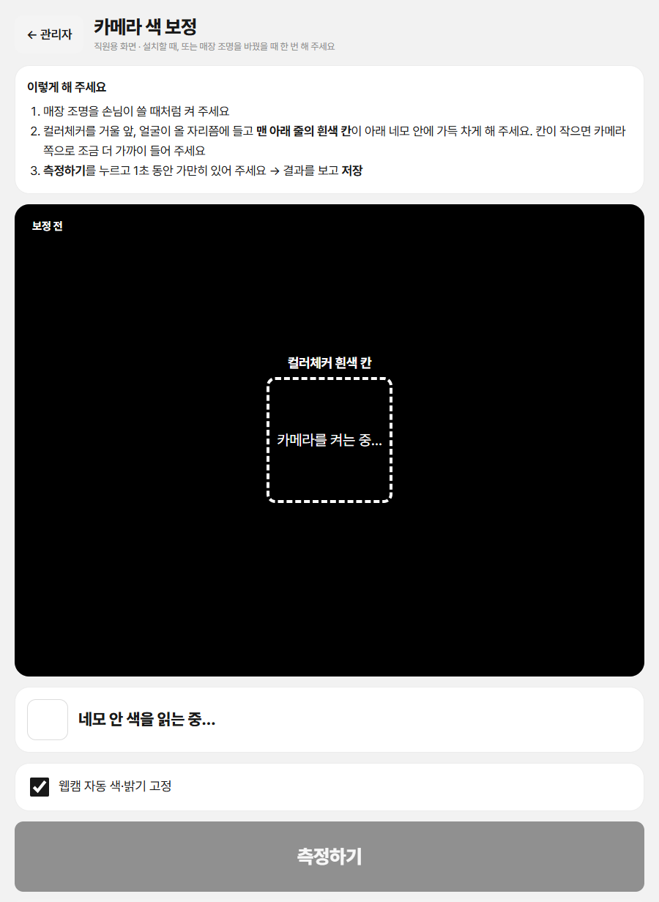
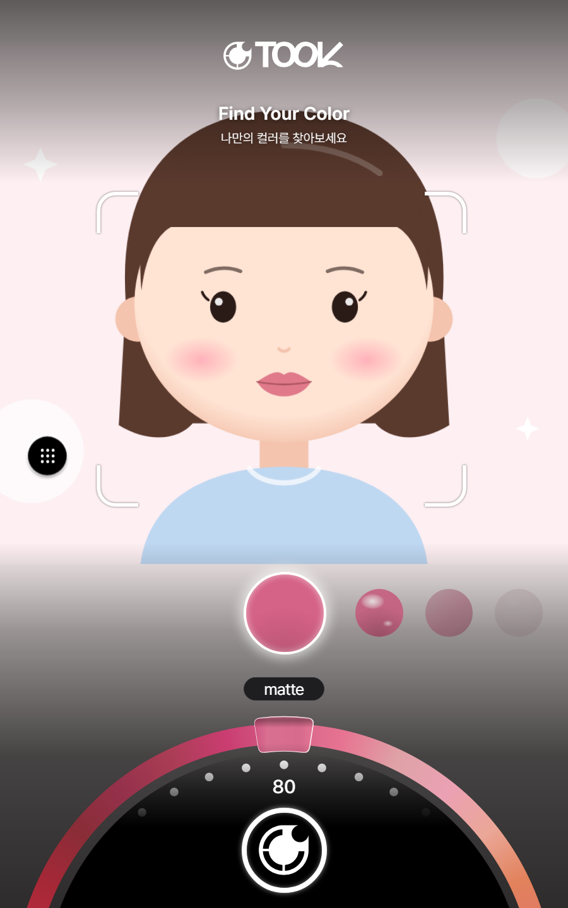
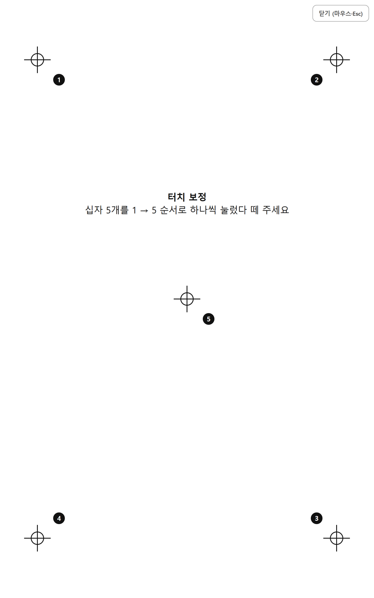
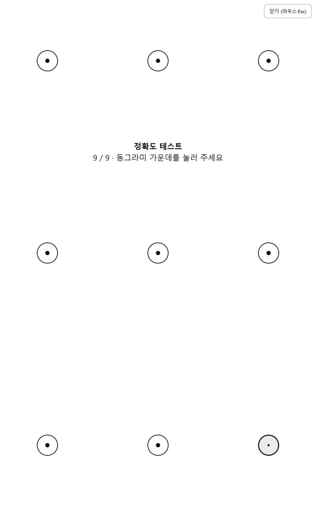

하프미러 뒤에서도 화면의 글자와 립 색이 충분히 보이는가. 두 단계로 확인했다. 먼저 PC 미리보기 화면(preview.html)에서 브라운·실버 필름을 겹친 모습을 흉내 내어 비교했다. 다음으로 유리 하프미러(4mm, ATO 디스플레이), 조명 확산용 아크릴(2mm), 실버 필름을 13인치 디스플레이 앞에 대고 화면 밝기, 1m 글자 판독, 상의 왜곡을 보았다. 두께는 버니어 캘리퍼스로 쟀다.
Can the text and the lip color on the screen be seen well enough behind a half mirror? We checked in two steps. First, on a PC preview screen (preview.html), we simulated how brown and silver film would look when laid over the screen and compared them. Next, we held a glass half mirror (4 mm, ATO Display), light-diffusing acrylic (2 mm) and silver film in front of a 13-inch display and looked at screen brightness, whether text could be read from 1 m, and distortion of the reflection. Thickness was measured with vernier calipers.
필름은 색을 띠었다. 미리보기에서 브라운은 립 색을 탁하게, 실버는 어둡게 만들었다. 조명 확산용 아크릴은 가볍고 깨지지 않지만 큰 면적에서 상이 일그러졌다. 유리 하프미러는 상이 일그러지지 않았고, 투과율이 예상보다 높아 바탕을 검게 하지 않아도 글자와 얼굴이 보였다.
하프미러를 쓴 스마트 미러는 성립한다. 최종 재질은 유리 4mm, 반사율 65%·투과율 35%인 하프미러로 정했다. 화면 밝기 600nit에 투과율 35%를 곱한 이론값은 약 210nit이며, 각도별 밝기는 테스트할 예정이다.
The films were tinted: in the preview, brown made the lip color muddy and silver made it dark. Light-diffusing acrylic is light and does not break, but the reflection warped over a large area. The glass half mirror did not distort the reflection, and its transmittance was higher than expected, so text and the face were visible even without a black background.
A smart mirror built with a half mirror works. We chose a 4 mm glass half mirror with 65% reflectance and 35% transmittance as the final material. Multiplying the screen brightness of 600 nits by the 35% transmittance gives a theoretical value of about 210 nits; brightness by viewing angle will be tested later.

필름 없음No film

브라운 필름Brown film

실버 필름Silver film
실물 시료Physical samples
색을 흔든 것은 화면이 아니라
카메라였다



11월 9일의 초기 판단
바탕을 검게 한 화면
다크 모드를 버리고 카메라
영상으로 화면을 꽉 채움
컬러체커 흰색 칸으로 카메라
색을 맞추고 고정
처음에는 하프미러 위에서 검은 부분만 거울이 된다고 보고, 11월 9일 모든 화면에 다크 모드를 넣어 바탕을 검게 했다. 그러나 실물 유리 하프미러는 투과율이 예상보다 높아, 바탕을 검게 하지 않아도 글자와 얼굴이 보였다.
화면보다 카메라가 더 문제였다. 카메라가 스스로 색과 밝기를 바꾸면 같은 립 색도 장면마다 다르게 보였다. 색이 흔들리는 가장 큰 원인은 화면이나 필름이 아니라 카메라의 자동 보정이었다.
바탕을 검게 하던 다크 모드를 버리고 카메라 영상으로 화면을 꽉 채웠다. 컬러체커 보드로 카메라 색을 맞추고 고정하는 보정 화면을 만들었다.
At first we assumed that only the black areas become a mirror on a half mirror, so on November 9 we added a dark mode that made every background black. But the real glass half mirror let more light through than expected. Text and the face were visible even without a black background.
The camera turned out to be a bigger problem than the screen. When the camera changed color and brightness by itself, the same lip color looked different from scene to scene. The biggest cause of unstable color was neither the screen nor the film but the automatic adjustment of the camera.
We dropped the dark mode and filled the screen with the camera image. We also built a calibration screen that matches and locks the camera color using a color checker board.
하프미러 유리 너머로 누른 터치가 버튼 위치에 정확히 먹히는가. 정전식 필름은 화면과 완벽하게 겹치지 않는다. 필름이 조금 밀리거나, 화면보다 크거나, 살짝 기울어 붙으면 누른 곳과 인식한 곳이 어긋난다. 어긋남은 화면 가장자리로 갈수록 커진다. 이 시제품에서는 가로와 세로까지 반대로 인식되어 터치 보정이 꼭 필요했다.
그래서 터치 보정 화면(calib.html)을 만들었다. 십자 표시 5개(네 모서리 근처와 가운데)를 차례로 띄우고 직원이 누르게 한다. 실제로 누른 곳과 눌렀어야 할 곳의 차이로 보정식을 계산해 이후 모든 터치에 적용한다.
Does a touch made through the half-mirror glass land exactly on the button? The capacitive film never overlaps the screen perfectly. If the film is slightly shifted, larger than the screen or attached at a slight angle, the point pressed and the point recognized do not match. The gap grows toward the edges of the screen. In our prototype the horizontal and vertical axes were also read the wrong way round, so touch calibration became necessary.
So we built a touch calibration screen (calib.html). It shows five crosses in turn, near the four corners and in the center, and a staff member taps each one. From the difference between where they actually tapped and where they should have tapped, it calculates a correction formula and applies it to every touch afterward.
어긋남에는 밀림, 늘어남, 기울어짐이 섞여 있다. 아핀 변환은 이 세 가지를 6개의 숫자로 한 번에 표현한다.
x′ = a·x + b·y + c, y′ = d·x + e·y + f
점 3개면 6개의 숫자를 풀 수 있지만 사람의 손가락은 정확하지 않다. 그래서 점을 5개 받고, 오차 합이 가장 작아지는 숫자를 최소제곱법으로 찾는다. 한두 점을 조금 잘못 눌러도 결과가 크게 흔들리지 않는다. 직원이 맞추는 일이므로 이 점이 중요하다.
The mismatch is a mix of shifting, stretching and tilting. An affine transformation expresses all three at once with six numbers. Three points are enough to solve for six numbers, but a human finger is not precise. So we take five points and use the least-squares method to find the numbers that make the total error smallest. Even if one or two points are tapped slightly off, the result does not swing much. This matters because the calibration is done by store staff.
밀림Shift
늘어남Stretch
기울어짐Tilt
약 90° 돌아감Rotated about 90°

십자 5개Five crosses

정확도 테스트Accuracy test
평균 약 600px의 어긋남이
보정 후 5.2px로 줄었다
평균 약 600px, 최대 약 1,010px
누른 곳(고리)과 인식된 자리(빨간 점)가
약 90° 돌아가 있다
평균 5.2px, 최대 6.4px
9곳 모두 맞는 자리가 눌렸다
호수 버튼(약 260×104px)
절반 높이인 52px
화면 위 9곳에 목표점을 띄워 각각 1번씩 누르고, 누른 곳과 목표점의 거리를 보정 전·후로 비교한다. 호수 버튼(약 260×104px)의 절반 높이인 52px보다 오차가 작으면 통과로 본다.
보정 전에는 터치 필름이 화면을 약 90° 돌린 좌표를 보내서, 9곳 평균 약 600px, 최대 약 1,010px가 어긋났다. 보정 후 남은 오차는 평균 5.2px, 최대 6.4px로 52px보다 훨씬 작아 통과했다. 보정 전 자리는 11월 15일에 저장한 보정값으로 거꾸로 계산해 그렸다.
필름을 다시 붙이는 것보다 소프트웨어로 맞추는 편이 빠르고 매장에서도 되풀이할 수 있다. 설치 때 한 번 맞추며, 매장 직원이 할 수 있도록 관리자 화면에 터치 보정을 넣었다.
We show target points at nine places on the screen, tap each one once, and compare the distance between the tap and the target before and after calibration. It passes if the error is smaller than 52 px, half the height of a shade button (about 260×104 px).
Before calibration, the touch film sent coordinates rotated about 90° from the screen, so taps were off by about 600 px on average and by up to about 1,010 px. After calibration, the remaining error was 5.2 px on average and 6.4 px at most, far below 52 px, so it passed. The before positions are computed back from the calibration saved on Nov. 15.
Correcting it in software is faster than re-attaching the film, and it can be repeated in the store. The touch is aligned once at installation, and touch calibration sits in the admin screen so that store staff can do it.